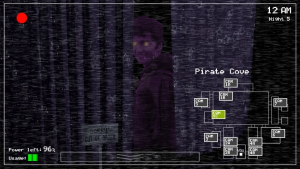
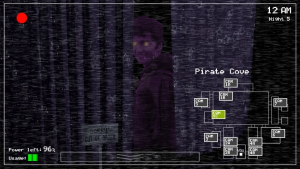

Mitos y leyendas
En el grupo hay viejas historias que cuentan los antiguos integrantes de "El Consejo", 10 años de la creación del mismo, algunas de dichas leyendas pueden ser:
- Ciertos integrantes son familiares.
- Integrantes de alto rango no son "humanos".
- Las puertas de la casa de X integrante lleva a la casa de otro integrante.
- PMC.
¿Similares o iguales?
La similitud de ciertos individuos y la aparición sorpresiva de algunos a la hora de que otro falte, es una verdadera sorpresa para los nuevos integrantes. La sospecha de clonación inicio cuando Lucho realizo las mismas actitudes que Fretxiz, que estaba desaparecido luego de una dura batalla de memes.
"Los Tres." ¿Personalidades multiple?
Dentro del grupo, unos individuos a los que llamamos "Ralph", "Juank" y "Cece" jamas estan presentes en el mismo momento, ademas de esto, cuando uno de estos tres se conecta, el otro instantaneamente se desconecta o deja de reproducir sonidos. Siempre se dijo que estos dos primeros individuos eran el mismo con personalidad multiple ya que fisicamente tienen similitudes, pero ¿Y la chica de estatura baja? ¿Es posible que una persona pueda cambiar sus rasgos fisicos? Suponiendo que Ralph y Juank son el mismo ¿Puede transformar su cuerpo a tal punto de convertirse en dicha chica? El misterio de "Tres" lleva poco tiempo pero cada día la teoria es mas acertada, se espera poder llegar a la verdad algun día.
¿Mismo hogar o puertas dimensionales?
Hay una pelea de rumores donde Fretxiz y Citric viven en la misma casa o tienen una puerta que conecta ambas, ignorando la distancia de las provincias. Al día de hoy dicha teoria no se puede confirmar ya que los individuos niegan demostrarlo frente camaras.

"Terror oculto"
Hay individuos con muchisima antiguedad en el grupo, se cree que los mas mas viejos forman el nombrado "Consejo". Al día de hoy no se sabe si estos controlan los pensamientos, acciones y decisiones del grupo. Disponemos de tan poca información sobre estos integrantes con alto rango, las pocas imagenes que se pudieron recuperar nos muestran la posiblidad de que estos seres no son humanos corrientes.


Todos los registros ya sean papeles quemados, cintas borradas, entrevistas de gente con supuestos avistamientos nos llevan a preguntar.
¿Son estos seres realmente humanos?


 


PMC ¿Lavado de cerebro o virus?.
Cada vez que alguien nuevo ingresa al grupo, al cabo de unas semanas este deja de pensar y actuar como su persona para convertirse en un ser de mente colmena. Aún no se explica si es un virus que afecta directamente la forma en que el cerebro razona o es una especie de lavado mental.
¿Unidos por sangre antigua?
De los individuos del grupo, se dice que algunos son familiares ya que ciertos ancestros son demasiado similares y no conocidos por ellos. Miembros del consejo insinuan que los antepasados de algunos integrantes son la misma persona con distinto nombre. Nadie sabe exactamente si esto es real, pero cada evento grupal, las coincidencias aumentan a tal punto de confirmar las teorias.